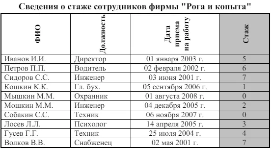
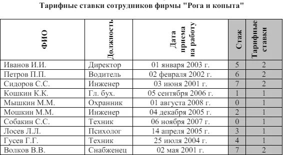

Задание для обучения MS Excel №3
Тема: Использование логических функций
Задание № 1
Работа с функциями Год и Сегодня
Ячейки, в которых выполнена заливка серым цветом, должны содержать формулы!
- Создать и отформатировать таблицу по образцу (Фамилии ввести из списка с помощью автозаполнения)
- Вычислить стаж работы сотрудников фирмы по формуле: =ГОД(СЕГОДНЯ()-Дата приема на работу)-1900
(Полученный результат может не совпадать со значениями в задании. Почему?)
- Переименовать Лист1 в Сведения о стаже сотрудников

Задание № 2
Работа с функцией ЕСЛИ
- Скопировать таблицу из задания № 1 на Лист2 и переименовать его в Тарифные ставки
- Изменить заголовок таблицы
- Добавить столбец Тарифные ставки и вычислить их таким образом:
1- если стаж меньше 5 лет, 2- если стаж больше или равен 5 лет

Задание № 3
Работа с вложенными функциями ЕСЛИ
- Скопировать таблицу из задания № 2 на Лист3 и переименовать его в Налоги.
- Изменить заголовок таблицы.
- Добавить столбцы Ставка, Начислено, Налог, Заработная плата и заполнить их таким образом:
Ставка = произвольное число от 500 до …
Начислено = Ставка * Тарифные ставки
Налог = 0, если Начислено меньше 1000, 12%, если Начислено больше 1000, но меньше 3000, и 20%, если Начислено больше или равно 3000
Сохранить документ в своей папке.
Показать работу учителю.